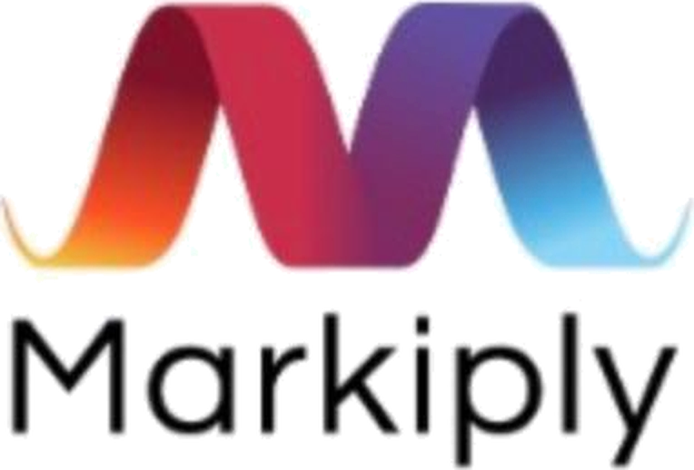

Helping marketers decide what to do, and whom to trust
Markiply helps marketing leaders turn a vague need into a clear plan and a short list of verified providers. This is a proof-of-concept prototype, built with AI tools on top of the product requirements. It is the starting point for a first version that will be tested with design partners.
Founding team member and UX/UI lead. I design the product experience, and I also help shape what the product is: its goals, its strategy, and how it earns users' trust.
Marketers often do not know what to do first or whom to trust. A raw AI chat gives fluent answers, but no way to tell what has been verified.
One guided flow for every starting point. It asks one question at a time, only what would change the answer, keeps a Decision summary beside the conversation, and marks what is expert-verified versus AI-suggested. The flow runs in three steps: Clarify, Decide, Act.
A concrete, clickable proof of concept that makes the product's three hypotheses testable: pain, value, and trust. Next, a first version goes to design partners, and what we learn from them shapes the product.
Open prototype Opens in a new tab. Sign in with the demo email maya@talentscout.example; there is a one-click shortcut on the login screen. Benchmarks, quotes, and providers are sample content.
From a vague need to a confident decision.
The screens below follow one decision from start to finish: a short guided conversation, a clear recommendation with a next step to choose, and verified providers to act with.
What shaped the design
The flow pre-fills what is already known, asks one question at a time, and says why it asks. A Decision summary keeps every answer visible and editable.
Verified answers and AI suggestions look different, labels are plain, and each provider page says what is confirmed and what is not. Providers are never ranked by payment.
Built with Claude and Lovable from the product requirements. It is now at version 1.5, and the open product questions stay in plain view.
From proof of concept to a tested first version.
1. Develop a preliminary version. 2. Test and evaluate it with design partners. 3. Turn the insights into the next iteration of the product and a presentation for investors.